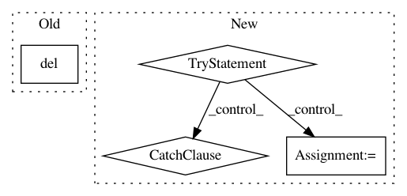

f028981328521c4c0822722ddcbd75783c5d5644,sksurv/__init__.py,,,#,3
Before Change
from ._version import get_versions
__version__ = get_versions()["version"]
del get_versions
After Change
from pkg_resources import get_distribution, DistributionNotFound
try:
__version__ = get_distribution("scikit-survival").version
except DistributionNotFound:
// package is not installed
__version__ = "unknown"
In pattern: SUPERPATTERN
Frequency: 3
Non-data size: 4
Instances
Project Name: sebp/scikit-survival
Commit Name: f028981328521c4c0822722ddcbd75783c5d5644
Time: 2016-12-29
Author: sebp@k-d-w.org
File Name: sksurv/__init__.py
Class Name:
Method Name:
Project Name: facebook/FAI-PEP
Commit Name: 6cb62da4205e52f91c9c8fd94dbcdfaca717eb36
Time: 2018-06-04
Author: 34827865+llyfacebook@users.noreply.github.com
File Name: benchmarking/frameworks/caffe2/caffe2.py
Class Name: Caffe2Framework
Method Name: _collectDelayData
Project Name: cornellius-gp/gpytorch
Commit Name: d71bc3c8b533c319e49cf6b347d13c48c925ea93
Time: 2019-03-18
Author: gpleiss@gmail.com
File Name: gpytorch/utils/getitem.py
Class Name:
Method Name: _compute_getitem_size